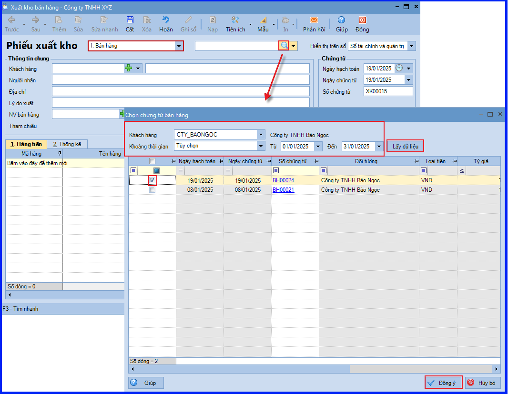
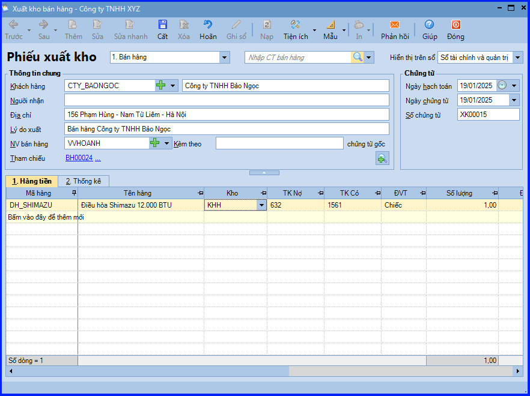
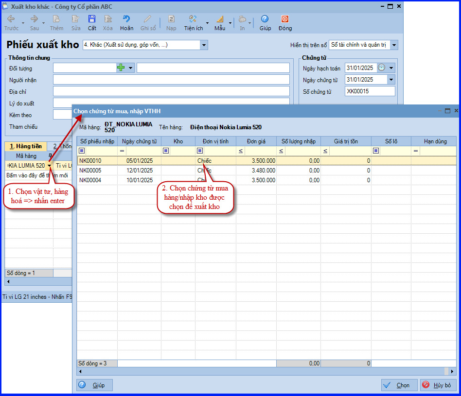

Hướng dẫn cách hạch toán ghi sổ nghiệp vụ xuất kho bán hàng trên phần mềm Misa
Khi phát sinh nghiệp vụ xuất kho bán vật tư, hàng hóa, thông thường sẽ phát sinh các hoạt động sau:
- Nhân viên bán hàng đề nghị xuất kho hàng bán
- Kế toán kho lập Phiếu xuất kho, sau đó chuyển Kế toán trưởng và Giám đốc ký duyệt
- Căn cứ vào Phiếu xuất kho, Thủ kho xuất kho hàng hoá
- Thủ kho ghi sổ kho, còn kế toán ghi sổ kế toán kho.
- Nhân viên nhận hàng và giao lại cho khách hàng
1. Cách định khoản hạch toán khi xuất kho bán hàng
- Nợ TK 632 - Giá vốn hàng bán
- Có TK 152, 155, 156…
2. Các bước hạch toán, ghi sổ nghiệp vụ xuất kho bán hàng trên phần mềm Misa
Trước khi thực hiện nghiệp vụ “Xuất kho bán hàng” kế toán cần phải lập chứng từ ghi nhận doanh thu bán hàng tab "Bán hàng của phân hệ Bán hàng". Khi đó, nghiệp vụ “Xuất kho bán hàng” được thực hiện trên phần mềm như sau:
- Vào phân hệ "Kho" => chọn tab "Nhập, xuất kho" => chọn chức năng "Thêm\Xuất kho".
- Chọn loại phiếu xuất kho là Bán hàng.
- Chọn chứng từ bán hàng cần lập phiếu xuất kho bằng 1 trong 2 cách:
+ Ấn vào biểu tượng mũi tên, chọn chứng từ bán hàng cần lập phiếu xuất.
.png)
+ Chọn chứng từ bán hàng trong danh sách tìm kiếm:
- Ấn vào biểu tượng kính lúp.
- Thiết lập điều kiện tìm kiếm chứng từ bán hàng, sau đó ấn "Lấy dữ liệu".
- Tích chọn chứng từ bán hàng cần lập phiếu xuất, sau đó ấn "Đồng ý".

- Hệ thống sẽ tự động lấy thông tin của khách hàng và hàng hóa từ chứng từ bán hàng sang.
- Khai báo các thông tin khác của phiếu xuất kho.

- Sau khi khai báo xong chứng từ xuất kho, ấn "Cất".
- Ấn chọn chức năng "In" trên thanh công cụ, sau đó chọn mẫu phiếu xuất kho cần in.
CHÚ Ý:
- Có thể bổ sung hoặc loại bỏ bớt mặt hàng trên phiếu xuất so với chứng từ bán hàng bằng cách click chuột phải vào chọn chức năng "Xóa dòng chứng từ".
- Trường hợp Thủ kho có tham gia sử dụng phần mềm, sau khi phiếu xuất kho bán hàng được lập, chương trình sẽ tự động sinh phiếu xuất kho trên tab "Đề nghị nhập, xuất kho của Thủ kho". Thủ kho thực hiện việc ghi sổ phiếu xuất kho vào sổ kho.
- Cách xác định Đơn giá vốn của Vật Tư Hàng Hóa trên phiếu xuất kho như sau:
- Trên các phiếu xuất kho, đơn giá vốn của vật tư hàng hoá xuất kho sẽ được hệ thống tính căn cứ vào phương pháp tính giá xuất kho đã lựa chọn trên menu "Hệ thống" => "Tuỳ chọn" => "Vật tư hàng hoá":
- Với phương pháp Bình quân cuối kỳ, khi phiếu xuất kho được ghi sổ sẽ chưa có thông tin về đơn giá vốn. Đơn giá vốn chỉ được cập nhật khi kế toán thực hiện chức năng "Tính giá xuất kho".
- Với phương pháp Bình quân tức thời hoặc Nhập trước xuất trước, khi phiếu xuất kho được ghi sổ hệ thống sẽ tự động cập nhật giá vốn vào đơn giá xuất của phiếu xuất theo phương pháp đã chọn.
- Với phương pháp Đích danh, khi chọn vật tư hàng hoá để xuất kho, hệ thống sẽ hiển danh sách các các chứng từ mua hàng hoặc nhập kho để lựa chọn. Khi đó đơn giá trên chứng từ được chọn sẽ cập nhật vào đơn giá xuất của phiếu xuất kho.
CHÚ Ý: Từ SME22 – R22, người dùng có thể chủ động sắp xếp cột "Hạn dùng theo thứ tự tăng dần hoặc giảm dần", thuận tiện cho kế toán chọn xuất trước những Vật Tư Hàng Hóa sắp đến hạn sử dụng.

KẾ TOÁN DIỆU TÂM chúc các bạn làm tốt!
=============================
Nếu bạn muốn thành thạo các kỹ năng làm kế toán trên phần mềm Misa
Thì bạn có thể tham khảo "Khóa Học Thực Hành Kế Toán Trên Phần Mềm Misa" tại Công ty đào tạo Kế Toán Diệu Tâm
Trong khóa học này, bạn sẽ được dạy cách lên sổ sách, lập báo cáo tài chính trên phần mềm Misa
Chi tiết về chương trình đào tạo bạn xem tại đây nhé: Khóa học thực hành kế toán trên Misa
=============================
=============================
Nếu bạn muốn thành thạo các kỹ năng làm kế toán trên phần mềm Misa
Thì bạn có thể tham khảo "Khóa Học Thực Hành Kế Toán Trên Phần Mềm Misa" tại Công ty đào tạo Kế Toán Diệu Tâm
Trong khóa học này, bạn sẽ được dạy cách lên sổ sách, lập báo cáo tài chính trên phần mềm Misa
Chi tiết về chương trình đào tạo bạn xem tại đây nhé: Khóa học thực hành kế toán trên Misa
=============================